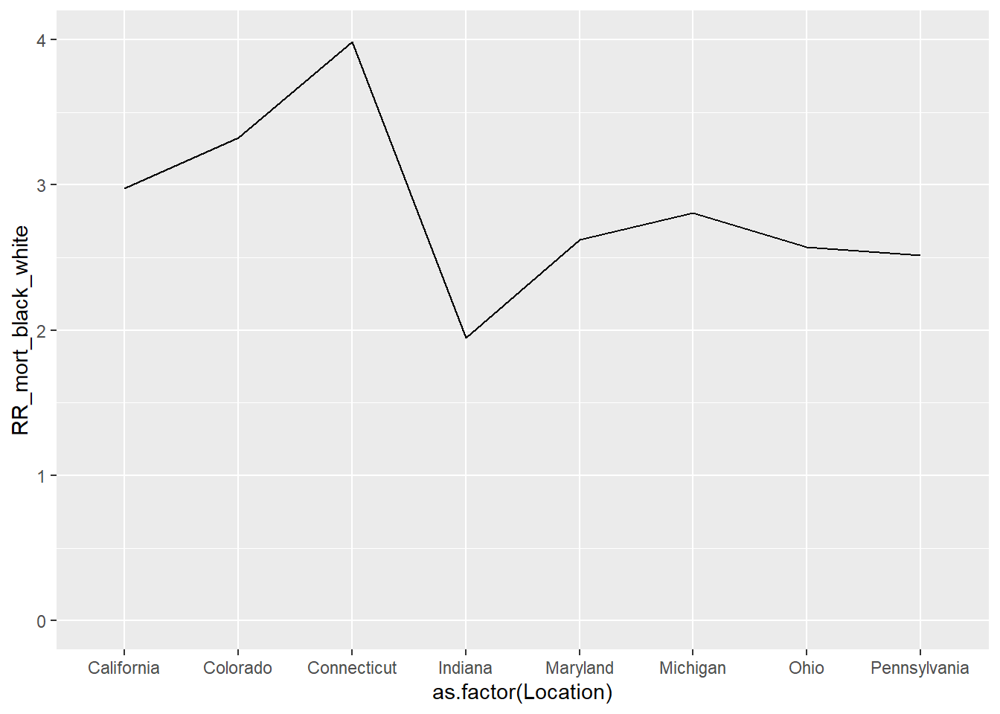
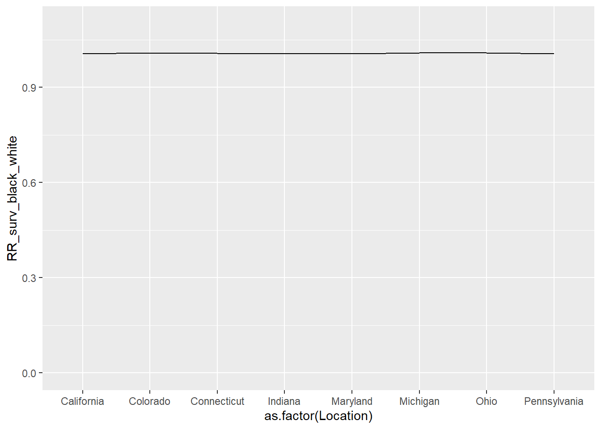
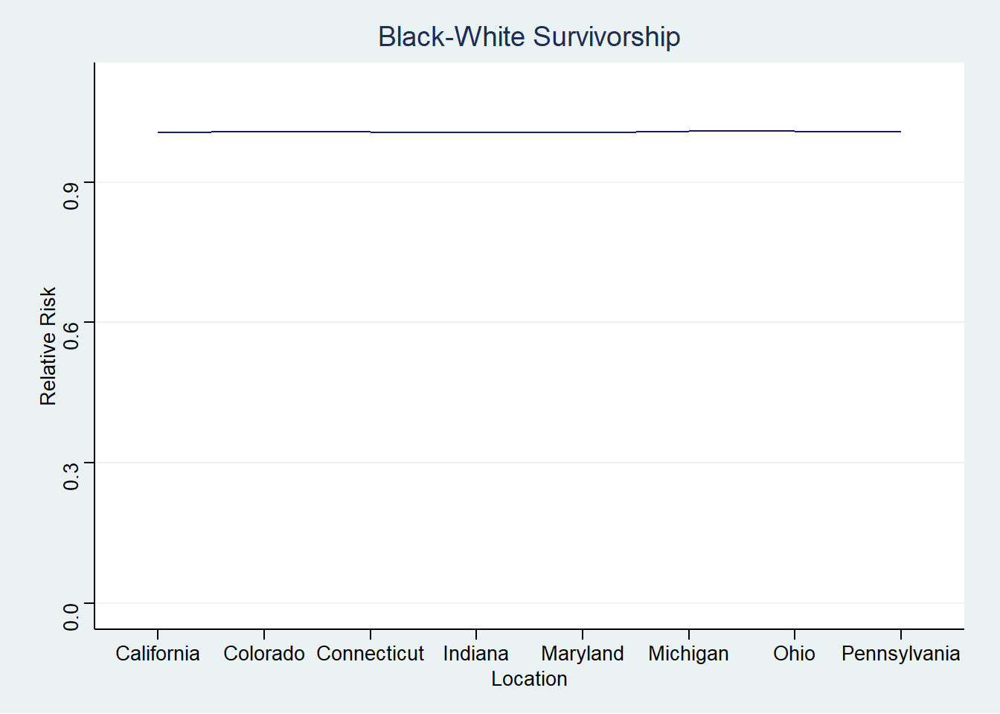
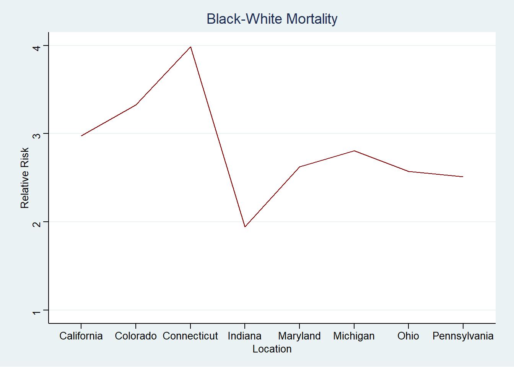

Code
library(ggplot2)
df <- read.csv("inf_mortality_ex.csv")Barboza-Salerno
This example demonstrates how numbers are really socially constructed. Here, I will show that what looks like gross disparities of infant mortality by race can also be understood to be similar across race.
The interpretation is: in California, there are about 3.04 infant deaths per 1,000. What is going on with Indiana?
[1] 3.047175 3.522871 2.247074 6.016995 3.653389 5.047984 5.131467 4.275928| State | White Infant Mortality per 1,000 |
|---|---|
| California | 3.047175 |
| Colorado | 3.522871 |
| Connecticut | 2.247074 |
| Indiana | 6.016995 |
| Maryland | 3.653389 |
| Michigan | 5.047984 |
| Ohio | 5.131467 |
| Pennsylvania | 4.275928 |
The infant mortality rate for Black infants is substantially higher. In Michigan, there are 14.2 Black infants who die for every 1,000 births.
[1] 9.066566 11.713521 8.951113 11.710539 9.584821 14.162292 13.206092
[8] 10.747552| State | Black Infant Mortality per 1,000 |
|---|---|
| California | 9.066566 |
| Colorado | 11.713521 |
| Connecticut | 8.951113 |
| Indiana | 11.710539 |
| Maryland | 9.584821 |
| Michigan | 14.162292 |
| Ohio | 13.206092 |
| Pennsylvania | 10.747552 |
Below, I calculate the relative risk ratio for Black infants compared to Whites. You can see very large disparities. For example, in California the relative risk of death for Black infants is almost three times higher than for White infants (2.975)
Let’s calculate the survivorship ratio
[1] 1003.056 1003.535 1002.252 1006.053 1003.667 1005.074 1005.158 1004.294[1] 1009.150 1011.852 1009.032 1011.849 1009.678 1014.366 1013.383 1010.864[1] 1.006074 1.008288 1.006765 1.005761 1.005989 1.009245 1.008183 1.006542

We can make nicer charts with the add-on package called ggthemes. Let’s install it and see if we can make prettier charts. install.packages(ggthemes) then library(ggthemes)
Below, I am selecting the theme called theme_stata which makes the output look like a stata graph.


It is very reasonable to examine these data further.
---
title: "Infant Mortality Example"
author: "Barboza-Salerno"
---
This example demonstrates how numbers are really socially constructed. Here, I will show that what looks like gross disparities of infant mortality by race can also be understood to be similar across race.
# Data
#### The data comes from KFF and can be accessed [here](https://www.kff.org/other/state-indicator/births-by-raceethnicity/?currentTimeframe=0&selectedDistributions=white--black&selectedRows=%7B%22states%22:%7B%22california%22:%7B%7D,%22colorado%22:%7B%7D,%22connecticut%22:%7B%7D,%22indiana%22:%7B%7D,%22maryland%22:%7B%7D,%22massachusetts%22:%7B%7D,%22michigan%22:%7B%7D,%22ohio%22:%7B%7D,%22pennsylvania%22:%7B%7D%7D%7D&sortModel=%7B%22colId%22:%22Location%22,%22sort%22:%22asc%22%7D#notes)
```{r}
library(ggplot2)
df <- read.csv("inf_mortality_ex.csv")
```
## Mortality Rates per 1,000 births
The interpretation is: in California, there are about 3.04 infant deaths per 1,000. What is going on with Indiana?
```{r}
(df$inf_mort_white_1000 <- (df$white_infant_deaths/df$white_births)*1000)
knitr::kable(df[, c(1,6)], col.names = c('State', 'White Infant Mortality per 1,000'), align = "lc")
```
The infant mortality rate for Black infants is substantially higher. In Michigan, there are 14.2 Black infants who die for every 1,000 births.
## Mortality Ratios
```{r}
(df$inf_mort_black_1000 <- (df$black_infant_deaths/df$black_births)*1000)
knitr::kable(df[, c(1,7)], col.names = c('State', 'Black Infant Mortality per 1,000'), align = "lc")
```
Below, I calculate the relative risk ratio for Black infants compared to Whites. You can see very large disparities. For example, in California the relative risk of death for Black infants is almost three times higher than for White infants (2.975)
```{r}
(df$RR_mort_black_white <- df$inf_mort_black_1000/df$inf_mort_white_1000)
```
## Survivorship Ratios
Let's calculate the survivorship ratio
```{r}
df$inf_surv_white <- df$white_births - df$white_infant_deaths
df$inf_surv_black <- df$black_births - df$black_infant_deaths
(df$inf_surv_white_1000 <- (df$white_births/df$inf_surv_white)*1000)
(df$inf_surv_black_1000 <- (df$black_births/df$inf_surv_black)*1000)
```
```{r}
(df$RR_surv_black_white <- df$inf_surv_black_1000/df$inf_surv_white_1000)
```
```{r}
ggplot(df, aes(x=as.factor(Location), y=RR_mort_black_white, group=1)) + geom_line()+ ylim(0, 4)
```
```{r}
ggplot(df, aes(x=as.factor(Location), y=RR_surv_black_white, group=1)) + geom_line() + ylim(0, 1.1)
```
::: {.callout-tip}
## GGthemes
We can make nicer charts with the add-on package called `ggthemes.` Let's install it and see if we can make prettier charts.
`install.packages(ggthemes)` then `library(ggthemes)`
:::
### Plotting the differences
Below, I am selecting the theme called `theme_stata` which makes the output look like a stata graph.
```{r}
library(ggthemes)
ggplot(df,
aes(x=as.factor(Location),
y=RR_surv_black_white, group=1)) +
geom_line(color = "midnightblue") +
ylim(0, 1.1) +
theme_stata() +
labs(title = "Black-White Survivorship", x = "Location", y = "Relative Risk")
ggplot(df,
aes(x=as.factor(Location),
y=RR_mort_black_white, group=1)) +
geom_line(color = "darkred") +
ylim(1, 4) +
theme_stata() +
labs(title = "Black-White Mortality", x = "Location", y = "Relative Risk")
```
#### Your tasks
It is very reasonable to examine these data further.
- [ ] What research questions would you propose to examine infant mortality disparities across states?
- [ ] Would the research question be the same if you were examining survivorship versus mortality?